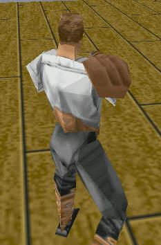

Light Mode 2
With diffuse lighting, a light value is calculated for each face. For sector surfaces,
however, the lighting is always full. Here's a picture of a 3do with diffuse lighting:

Althougth this jpg image quality is poor, you can see that the different
faces in the player's model stand out because of their different light
values.